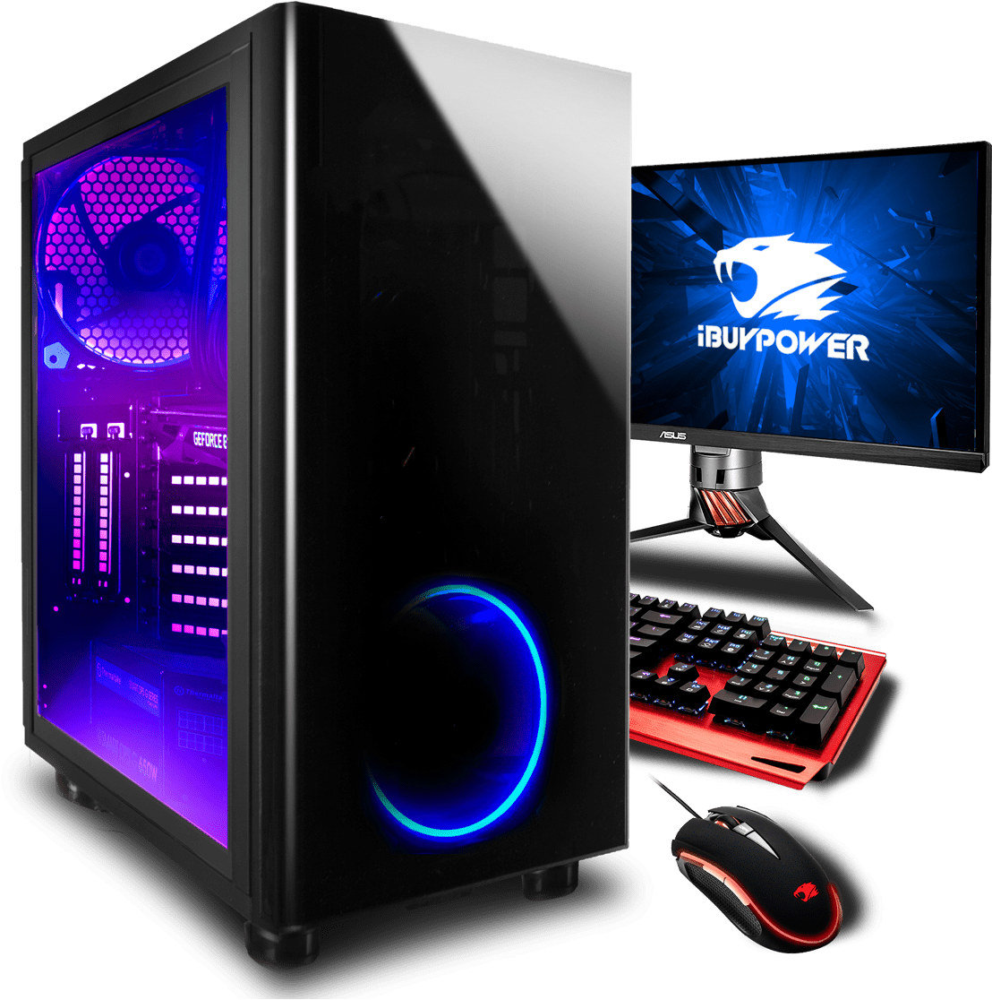

Chapters

This Website is created for education purposes (for School Project) -by Sujal Shrestha (XI SCIENCE Morning E)
Chapter 1: Computer system
Introduction
Computer is an electronic device device derived from the Latin word "computere" which means to calculate. It accepts raw facts and figures as an input which are isolated and uninterpreted through input device, process it according to the requirement of the user or command supplied by the user, store it before and after processing of require and produce a meaningful information as an output through an output device. Generally, computer works on IPO (Input-Process-Output) cycle. It follows GIGO (Garbage In Garbage Out) algorithm which means the output is always based on the input supplied by the user. The basic operation of computer is illustrated by following block diagram.
Some characteristics/features of computer.
The implementation of computers are not only limited/confined to a small area rather they are used from simple domestic task to complex scientific research to engineering. The use of computer are increasing day-by-day due to some special features or characteristics that computer own. Several features of computer are:
Capabilities and Limitations of computer (Pros and Cons)
Capabilities/Advantages/Merits/Pros of computer:
Limitations/Disadvantages/De-merits/Drawback/Cons of computer:
Generations of computer.
History of computers dates back to mechanical era where computer were not used for general purpose. It takes long period of time to come to this phase. Development of computer had passed through different era from mechanical to electro mechanical to digital computer. The development in different electronic components, precise engineering and hi-tech technology has change the operation of computer drastically. Earlier computer were only used for specific purpose such as counting and performing basic mathematical operation. Later on, due to the necessity and requirement of user different general purpose computer were developed. Therefore, the classification of computer on the basis of major electronic component, their architecture and modes of operation is known as generations of computer. Five different generations of computer are listed below along with their distinct features.
1. First generations computer (1946-1958 )
eg: ENIAC, EDVAC, EDSAC, UNIVAC
2. Second generations computer (1959-1964 )
eg: IBM 7000, IBM 1401, IBM 1620, NCR 304, MARK III, ATLAS
3.Third generations computer ( 1965-1974 )
eg: PDP-8, PDP-11, ICL 2900 series, IBM 360, IBM 370
4. Fourth generation computer (1975-1990)
eg: Apple Macintosh, IBM PC
5. Fifth generation computer (1990-onwards)
Introduction to computer system
The word system refers to the integration of several individual independent unit which are integrated together to achieve a common objective or goal. System is a set of detailed method, procedure and routines created to carryout a specific activity, performs a duty or solve a problem. In a system different unit co-ordinate with each other so that they work as a whole. Without any of the unit whole system is affected.
Similarly. computer system is also a Combination on hardware, software and peripherals which are organized together to run our computer system smoothly. Basically, our computer System works on IPO (Input Process Output) cycle. So, it is mandatory/compulsory to have different unit work together as a whole in order to convert raw facts and figure into meaningful information. Without any one of these unit computer starts malfunctioning.
The design, arrangement, construction or organization a different parts of computer system is known as computer architecture. It is the conceptual design and fundamental operational structure of a computer system. It is a framework which focus in how CPU performs internal operation. So computer architecture may also be define as the science and art of selection, inter connecting hardware components to create computer to meet functional performance and cost.
Components/Elements of Computer System
A Computer System has several have several basic components or elements which are listed below:
Hardware: Hardware is the physical devices on the computer which we can touch and see With out hardware, software cannot work it include input device, output device, processing device and storage device for example: device like keyboard, mouse, CPU, hard disk and RAM are commonly used hardware devices.
Software: The collection set of instruction is known as program.which performs some specific function. These programs are integrated together in order to work as a software. Software describes how hardware should function and helps in popper utilization and mobilization of computer hardware.For eg. Operating system, MS-Office, Billing software etc.
Data/Information: The raw facts and figures that are isolated, uninterpreted, and doesn't give any sense is known as data. Data are fed into the computer for processing as a input though Input devices. Whereas, the meaningful result obtained after processing data according to the supplied instruction is known as information. Information generally are the processed version of data which are obtain as output through output device.
People/User: It is the most important part of the computer system. People operate the computer hardware and create the computer software. People helps to generate command to operate the computer system. Without user no hardware and software can be mobilized.
Procedure: Procedure are the description of how things are done.It includes steps for converting raw fact and figure into meaningful information. It include the general guidelines of how computer should be used.
Communication: Once the computer system is setup, there is tremendous amount of data flow between user to computer and vice-versa. The data are shared among different components of our computer System in the form of electronic signal. The exchange of data and information between several components can also be termed as communication.
Basic hardware components of a computer system.
Some characteristics/features of computer.
Some characteristics/features of computer.
Some characteristics/features of computer.
Chapter 2: Number System, Conversion and Boolean Logic
1's and 2's Complement
1's Complement: Reciprocal of 1s to 0s and 0s to 1s is its 1's complement. For eg, 1's Complement of (1011)2 is (0100)2
2's Complement: Adding 1 to the 1's complement of a given binary number is its 2's complement.
For eg, if (1010)2 is a given number then, its
1's complement is (0101)2 and 2's complement is (0101)2 +(1)2 = (0110)2
Chapter 3: Computer software and Operating System
Software - Introduction:
As we know stand alone hardware cannot do nothing, for the smooth operation of our Computer System there should be proper coordination between hardware and software. Software helps to mobilize the hardware and other resources. In order to mobilize hardware we have to write several set of instruction which instruct computer what to do, what not o. These set of instruction are collectively know as program and the term software is the collection of related programs and associated documents. In Order to produce useful output, hardware and software must work together. Nothing useful can be done with the hardware only and software cannot be utilize without hardware. The different types of software are:
Chapter 4: Application Package
MS-Word (Word Processor)
Introduction: Ms-Word is a text editing or word processing software develop by Microsoft Corporation, USA under MS-Office package. Word processing refers to use of computer to create, edit and print documents. A word processor enables us to create a document, store it electronically in a disk, display it on a screen, modify it by entering commands and characters from keyboard and print it on a printer. MS-Word is a windows based application it has many powerful and advance feature to manipulate the document, With the help of this program we can create any types of documents like letters, reports, thesis, manuals, brochures, advertisement an many other document. Beside creating, editing and modifying the documents MS-Word provides some special facilities such as checking spelling and grammatical error, to search for synonyms and antonyms, to work with columns, tables, special symbols, pictures, graphs, charts and many more. The document created with MS-Word have “.doc” extension. The newer version of MS-Word has newer extension “.docx”".
Chapter 5: Programming Concepts and logics
Introduction:
s we know every computerized device does not work by itself. They needed to be given some sort of command that makes computer work. These commands helps to instruct computer and program specific action required by the user. Since the command are given in the form of computer language, we need programming language are used to write the set of instruction which commands the computer to perform certain action collectively called programs. These programs are again integrated in order to make a complete software. Simply software is the collection of different interrelated program which performs specific function.
Chapter 6: Web technology
Introduction to the Internet
Internet is the global network of networks. Or it is huge collection of computers all over the world that is inter-connected to one another in various ways to form a web-net.
Chapter 7: Multimedia
Introduction:
Multimedia consist of two words ‘Multi’ and ‘Media’, Where multi means many and media means way/medium of expressing information. Hence, multimedia is the way of expressing information in different forms. The information can be expressed in either text, audio, video, graphics and animation. We use several forms of media for better understanding and effective communication. By using multimedia any information can be illustrated in greater depth.
Chapter 8. Information Security and Cyber Law
1. What is Information Technology? Describe it with its social impacts.
Information Technology is a modern concept or methodology of communication. It is the combined form of Information and Communication Technology, which is highly used for the information flow and in many other fields. IT has made the world closer day by day. One can easily send and receive the message throughout the world within a second. It has been widely used in education, industry, banks, research center, hospitals, etc. It is being used as learning and teaching tool in the sector of education. Distant learning has become possible due to the advancement of IT. It has been highly used in the industries to control quantity and quality of the product. It is equally used for the management in hospitals and for the treatment of the patients. IT is being used in the sector of animation and other entertainment. Scientists can use computer or IT for their research and experiment. Space technology has become possible due to the IT. Thus it has much such a positive impact on the society. But it has some negative impacts, too. As the use of IT is increasing day by day, the cyber crimes are also increasing. Cyber criminals can easily steal others’ information or data, they can disclose other secrecy, and they can easily spread the virus in the network and disturbs the social peace and security.